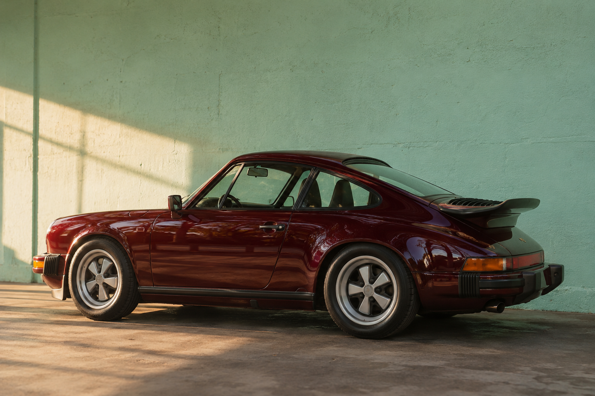

Хочется снова за руль.

Вернуть глубину цвета.
Освежить салон.
Сохранить то, за что вы любите свою машину.
Знакомое авто.
Новое ощущение.
Выберите, чего ему сейчас не хватает.
Полировка кузова
Свет снова подчёркивает линии кузова. Уменьшаем мелкие следы от моек и возвращаем лаку блеск — в пределах, безопасных для покрытия.